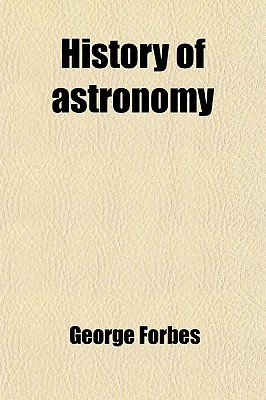

History of Astronomy
Reseña por Jorge I. Zuluaga

Ver detalles · Ver reseña en GoodReads (necesita cuenta)
Si bien he estudiado la historia de la astronomía desde mis primeros años en la universidad y, posteriormente, como profesor de cursos introductorios en la materia, es imposible no dejarse sorprender por un nuevo dato o una anécdota desconocida, que solo se descubre cuando lees una fuente relativamente remota en el tiempo. A veces, al leer libros de historia contemporáneos, parece como si todos los que los escriben hubieran bebido de la misma fuente sin que ninguno se atreviera a cuestionar o profundizar en un hecho ampliamente reconocido.
Un ejemplo tomado de este libro es el caso del origen del heliocentrismo. Casi todos los historiadores de la ciencia, basados naturalmente en los escritos del mismo Copérnico, señalan a Aristarco como posiblemente la fuente de inspiración para la teoría heliocéntrica. Es interesante descubrir, sin embargo, que la idea es originaria de la escuela pitagórica, cuyas enseñanzas seguramente conoció el mismo Aristarco.
Con este librito descubrí algo que poco se cuenta: el más grande astrónomo observacional de todos los tiempos y en todas las áreas (sistema solar, estrellas, nebulosas y galaxias) ha sido William Herschel. La mayoría de los textos de astronomía hablan de Herschel básicamente como un constructor de telescopios que elaboró un completo catálogo de objetos de espacio profundo y describió por primera vez la estructura tridimensional de la Vía Láctea. Basta. Pero los aportes y observaciones de Herschel fueron más allá de estas que, de por sí, fueron grandiosas hazañas.
Herschel estudió en detalle la atmósfera de Júpiter y planteó por primera vez la posibilidad de que las franjas ecuatoriales estuvieran a distintas alturas; probó que las lunas de Júpiter daban siempre la misma cara al planeta, midió el grosor de los anillos de Saturno cifrándolo en menos de 500 km (hoy sabemos que miden menos de 100 m), midió el período de rotación de Saturno; tratando de medir el paralaje de las estrellas estudió el movimiento de las estrellas binarias y demostró POR PRIMERA VEZ en la historia que la teoría newtoniana de la gravedad se aplicaba más allá del sistema solar; estuvo entre los primeros en sugerir que muchas "nebulosas" eran en realidad una colección incontable de estrellas (galaxias), entre muchas otras cosas.
El libro está lleno de datos curiosos que ya no abundan en otros libros recientes de historia de la astronomía. De alguna manera, esto demuestra que, a veces, para conocer mejor la historia, es mejor referirse a libros de historia que fueron escritos hace mucho tiempo. Si bien la historiografía como ciencia o la arqueología han avanzado mucho en las últimas décadas, es cierto que, a veces, nada mejor que el recuento de primera mano de alguien que vivió en el tiempo.
Es así como este libro, escrito por un activo astrónomo de principios del siglo XX (él mismo menciona sus propios aportes), es posiblemente la mejor y más fiable fuente de información sobre la manera como se dieron los descubrimientos del siglo XIX, quizás el más importante en términos de avances observacionales en astronomía y en astronomía física.
Muchos datos curiosos los encontrarán en la lista de subrayados y notas que acompañan esta reseña. A continuación, sin embargo, extraigo los que más me llamaron la atención (además de los arriba mencionados sobre los aportes de William Herschel):
- El libro "Astronomia Nova" de Kepler es una de las piezas maestras de la literatura astronómica de todos los tiempos.
- La inclinación del eje de rotación de la Tierra ha estado disminuyendo desde tiempos antiguos y ha sido medida desde la antigüedad comparando observaciones realizadas en distintas épocas.
- Posiblemente el avance más importante en astronomía de todos los tiempos fue el descubrir que el Sol, la Luna y las estrellas estaban a distintas distancias.
- Los sacerdotes jesuitas fueron la fuente más importante de información sobre la astronomía china de la antigüedad que hemos tenido.
- Al parecer, la astronomía egipcia fue mucho más rica de lo que muchos historiadores piensan.
- Los griegos afirmaban (al parecer, según algunos, motivados por su modestia) que muchos de sus conocimientos y tradiciones astronómicas eran una herencia egipcia, babilonia y asiria.
- El califa Omar, en 640 e.c., quemó la biblioteca de Alejandría porque sostenía que los libros que había allí eran consistentes o inconsistentes con el Corán; en el primer caso los libros serían superfluos y en el segundo su contenido sería objetable.
- La duración del año, conocida bien por los egipcios, era un secreto guardado por sus sacerdotes.
- Anaxágoras sostenía que la Luna era un lugar como la Tierra, pero inhabitado. Fue acusado de impiedad y debió ser defendido por el famoso estadista griego Pericles.
- Aunque todos conocemos la historia de que Eratóstenes midió el diámetro de la Tierra, que cifró en 250.000 estadios, la verdad es que no se sabe exactamente cuánto medía un estadio en ese entonces.
- Hiparco de Nicea es el padre de la astronomía observacional. También fue el inventor de la trigonometría, tanto plana como esférica.
- El sistema tychoniano del sistema solar, en el que los planetas giraban alrededor del Sol y este alrededor de la Tierra, es en realidad de origen egipcio.
- El rol de Copérnico en la historia de la astronomía ha sido sobrevalorado. En realidad, es Kepler el padre de la astronomía moderna.
- Tycho tenía un principio que decía que no se podían formular hipótesis antes de tener observaciones que la motivaran. Por ello es considerado fundador del método inductivo.
- Tycho creía profundamente en la astrología.
- Uno de los logros más importantes del modelo kepleriano del sistema solar, que no existía en el modelo copernicano, era la convicción de que los planos y la línea de los ápsides de las órbitas de los planetas pasaban por el Sol. Un verdadero heliocentrismo.
- Después de que Urano fue descubierto, se encontró que muchos astrónomos lo habían confundido previamente con una estrella. Fue usando justamente esas observaciones previas que pudieron encontrarse evidencias de la existencia de Neptuno.
- Kepler ya había mencionado, desde unos dos siglos antes, la posibilidad de la ley de Titius-Bode.
- Hiparco inventó el astrolabio.
- El telescopio solo empezó a utilizarse como un instrumento de "medida" (para apuntar, como lo eran el sextante o el octante) a partir de 1667 con Picard.
- James Gregory (1663) fue realmente el inventor del telescopio reflector (no Newton).
- Las líneas de absorción de la atmósfera de la Tierra (líneas telúricas) fueron descubiertas por David Brewster en 1832.
- Las teorías de Ptolomeo dependieron de las observaciones de Hiparco de la misma manera que Kepler de Tycho y Newton de Flamsteed.
- La astronomía física (astrofísica) nació con la invención de la fotografía y la espectroscopía.
- La astrofotografía nació con el primer registro de la Luna en 1853 por De la Rue.
- Ångström fue el primero en catalogar las líneas de Fraunhofer.
- Langrenus fue el primero en poner nombres de personalidades a los accidentes lunares en 1645.
- Por mucho tiempo se pensó que Mercurio, Venus y Marte rotaban con un período parecido al de la Tierra.
- No se conocieron más lunas de Júpiter hasta el descubrimiento de un satélite (el quinto) el 9 de septiembre de 1892.
- El primer movimiento propio de una estrella fue detectado por Halley en 1718.
- En 1844, el hijo de William Herschel, John Herschel, descubrió el movimiento anómalo de Sirio y Proción por la presencia de una compañera invisible, permitiendo hacer con las estrellas lo que se hizo con Neptuno.
- La mecánica cuántica, con su explicación detallada del origen de los espectros, fue la que permitió que la astronomía dejara de ser únicamente una ciencia observacional.